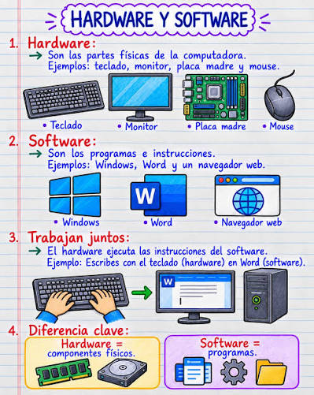

Sobre el taller de informática
En este laboratorio aprendemos a utilizar herramientas digitales, hardware, algoritmos y el desarrollo web para solucionar problemas técnicos.
Introducción a la Salud Digital
La Salud Digital consiste en el uso responsable de las tecnologías de la información y comunicación (TIC) para promover el bienestar físico, mental y social. Abarca desde la prevención de riesgos ergonómicos al usar computadoras, hasta la gestión adecuada del tiempo frente a pantallas y el uso ético de la información en línea.
Imagen Representativa:

Temas del Primer Trimestre:
- Introducción a la Web y HTML5
- Diseño de Estilos con CSS3
- Publicación de Proyectos Web
Para conocer más sobre la evolución de la tecnología, puedes consultar la Wikipedia en Español.
Horario del Taller:
| Día | Módulos | Horario |
|---|---|---|
| Martes | Módulo 5, 6 y 7 | 11:20 a 13:40 pm |
| Miércoles | Módulo 5 y 6 | 11:20 a 13:00 pm |
| Jueves | Módulo 1, 2 y 3 | 7:30 a 10:00 am |
Pausa Activa y Video: Salud Digital
¡Hora de tu pausa activa!
Estira la espalda, relaja los hombros y descansa la vista mirando hacia lo lejos bajo el cielo azul.
Test de Salud Digital (10 Preguntas Obligatorias)
Responde todas las preguntas para evaluar tus hábitos tecnológicos y ver tu diagnóstico en pantalla:
Música de Fondo / Pista del Taller:
Escucha la pista del proyecto mientras navegas: